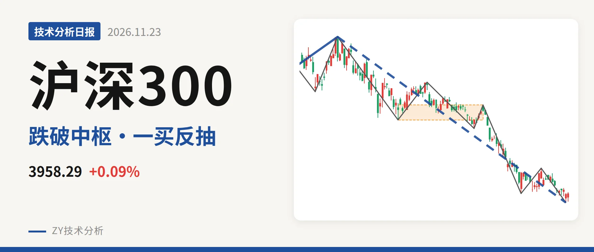
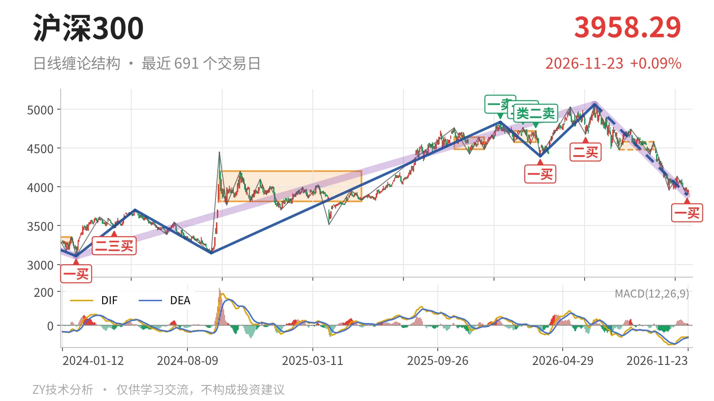
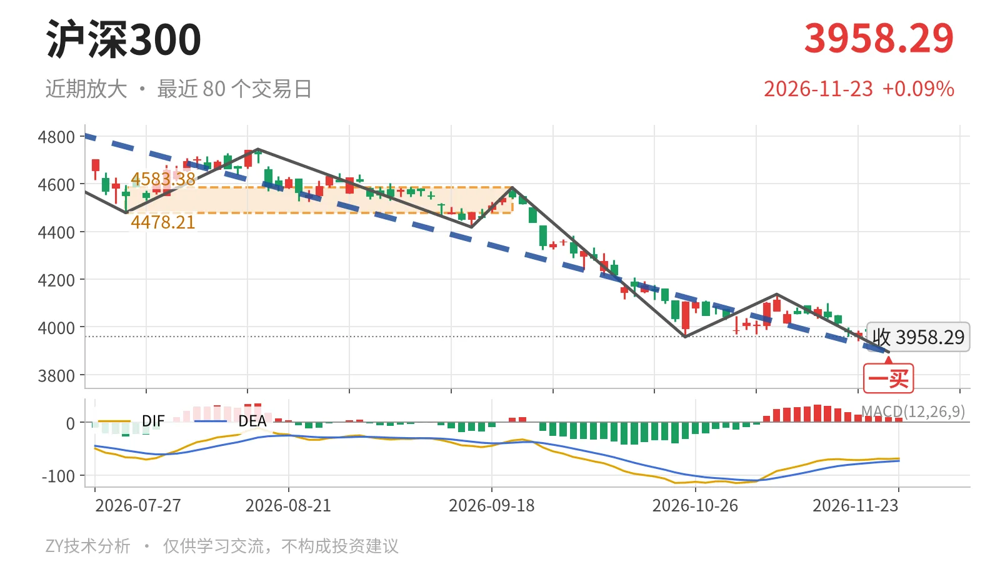

沪深300｜3894一买后反抽，3958点未回中枢

最近日线中枢 4478.21—4583.38点，收盘位于中枢之下
一句话：日线仍在下跌段中，11月20日一买后反抽未成笔，未回中枢
🧭 走势结构：更大级别上涨未结束，当前仍处日线下跌段
沪深300日线仍处于6月23日5064.27点以来的下跌段中。更大级别看，2021年2月18日至2024年2月2日的下跌段已经结束；2024年2月2日至2026年6月23日的上涨段由3108.35点升至5064.27点，上涨约63%，尚未走完。因此6月23日以来的回落只是这轮上涨中的调整。日线线段上，3月24日至6月23日的上涨线段已结束，6月23日至11月20日的下跌线段含7笔，跌23.1%，目前仍在延续。

🎯 中枢与位置：跌破最近中枢，下方临近前低
最新价3958.29点位于最近日线笔中枢7月30日至9月22日中枢（4478.21—4583.38点）下方，低于下沿约11.6%。该中枢较前一个2月3日至3月17日中枢（4578.21—4720.86点）明显下移，属中枢下移。更大级别看，最新价仍处于2024年10月8日至2025年5月30日笔中枢3812.32—4200.91点内部，但低于中轴4006.61点；最新价还贴着10月23日低点3958.14点，属于中枢下方的前低附近。
🧩 买卖点：前期一买二买被新低破坏，11月20日一买成立
11月20日的3894.47点形成日线笔级别一买（盘整背驰），所在下跌笔11月5日至11月20日已经结束。更早的3月24日一买4394.29点和6月8日二买4677.57点均已被11月20日新低破坏，只对应更小级别反弹。11月23日仅一根K线，最高3968.45点、最低3901.49点，尚未形成新的上涨笔，因此这个一买后的反弹仍只是未成笔的反抽。

📉 背驰：最后一段下跌笔呈“新低不新弱”
最关键的对比来自9月22日至10月23日和11月5日至11月20日两段同向下跌笔。前段低点3958.14点，绿柱面积494，DIF低点-115.1；后段价格创出3894点新低，但绿柱面积-0，DIF低点-92.5。价格新低而DIF未同步新低，属于新低不新弱，构成盘整背驰，对应11月20日一买。该背驰仍是日线笔级别，尚未改变6月23日以来线段的下跌方向。
🔎 关键位置观察：未回4478点前仍属弱势整理
当前结构观察位在3894点和4478点附近。若3894点被跌破，则6月23日以来日线下跌段继续，11月20日一买被破坏；若反抽能重新站上4478点，即回到7月30日至9月22日中枢内部，则当前下跌更可能是中枢扩展，而不是继续单边下移。若只是在3894点上方整理而无法回到4478点，则仍属于中枢下方的次级别反抽。在此之前，最新价低于最近中枢下沿，反抽未成笔，结构仍以弱势整理为主。
⚠️ 本文为基于公开行情数据的缠论技术结构记录，由程序自动计算并生成，仅供学习交流，不构成任何投资建议。市场有风险，投资需谨慎。